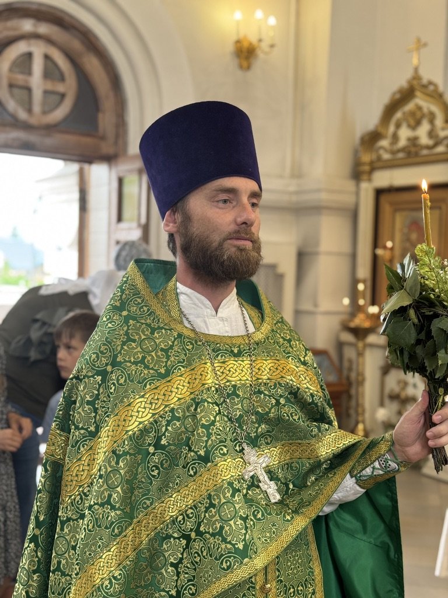

Ильин Евгений, иерей

Клирик Преображенского кафедрального собора города Бердска, духовник православной гимназии во имя преподобного Серафима Саровского. Занимается молодёжным и миссионерским служением, преподаёт в гимназии, организует встречи со школьниками, занятия по изучению Библии и воскресную школу для взрослых.
Руководит православным детским лагерем «Фавор» на Алтае и Бердским отрядом православных следопытов. Ведёт просветительский канал «Дневник ОЕ». В соборе совершает богослужения во вторник вечером, среду утром и вечером, четверг утром; воскресные занятия со взрослыми начинаются в 12:10.
Место служения
Служение в соборе
Вторник вечером; среда утром и вечером; четверг утром.
Это обычный порядок. Праздничные службы и изменения смотрите в актуальном расписании.
Службы и встречи в расписанииКак обратиться
Договориться о беседе можно через приход.
Источники и проверка сведений
Проверено 19 октября 2026 г.. Даты в исторических сообщениях не означают действующего расписания.